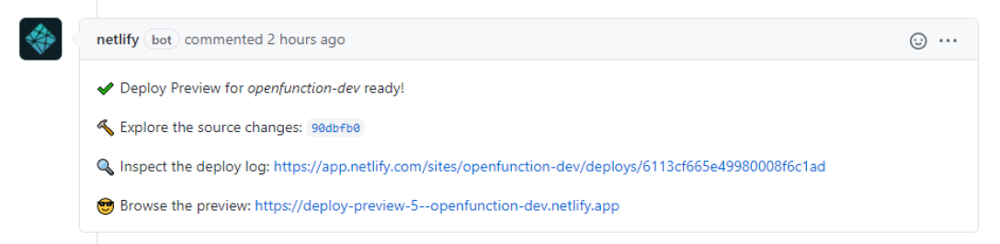
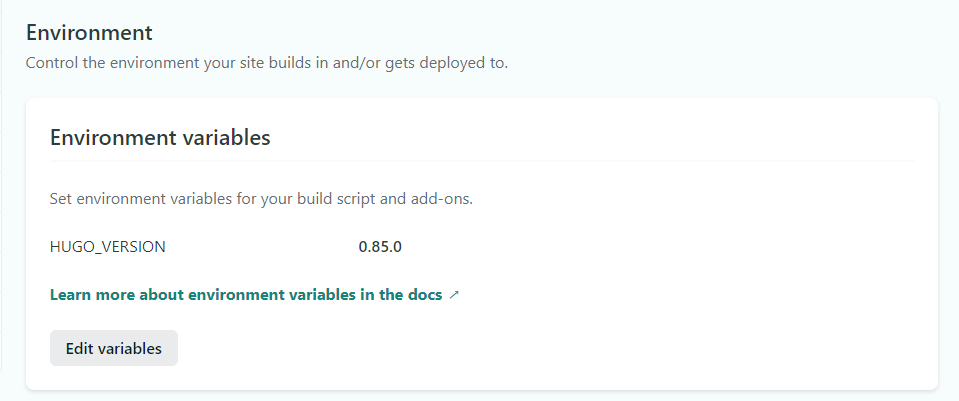
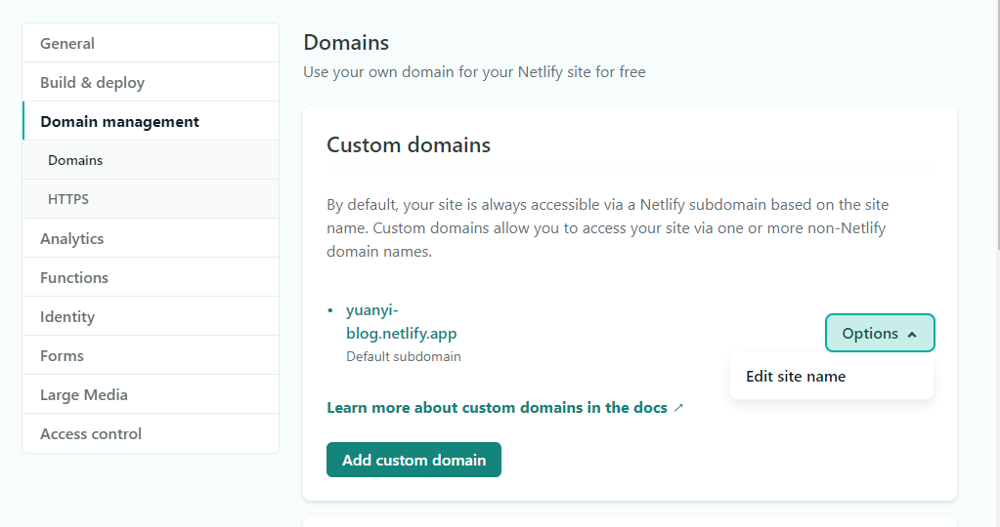
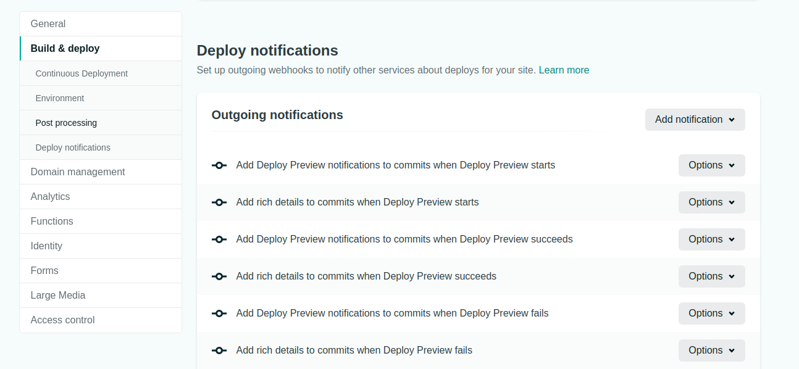

使用 Netlify 部署个人网站以及预览 GitHub 上的 PR
Netlify 是一个可以用来构建、部署、协作处理 Web 应用程序的云平台
本篇笔记介绍了如何在 GitHub 上添加 Netlify 以便预览提交的 Pull Request 效果

也可以参考此笔记将自己的网站部署在 Netlify 上
安装准备
在 GitHub 上安装 Netlify ，授权 GitHub 账号
或者你也可以选择在 Netlify 官网 上进行注册授权
New site from Git
选择平台 - 选择仓库 - 选择分支 - 基本设置 - deploy site
基本设置
常见框架对应的 Build command 和 Publish directory 可以看 官网文档
环境变量
如果第一次 deploy 失败，请查看环境设置，检查版本是否正确
Site settings > Build & deploy > Environment > Environment variables

修改域名
Netlify 会自动以你的 site name 生成一个域名：[name-of-your-site].netlify.app
进入 Domain Setting > Domain management > Custom domains，可以通过修改 site name 修改域名

为 PR 生成预览
进入 Site settings > Build & deploy > Deploy notifications

选择 ”Add notification“ ，在下拉菜单中选择 “GitHub Pull Request Comment” ，然后选择 “Deploy Preview succeeded” ，保存

现在每个新出现的 PR 都会自动生成一个评论，包含预览链接 deploy-preview-4--yoursitename.netlify.app
对开源项目的支持
如果是开源项目，可以阅读 Open Source Plan Policy 相关内容，提交申请表单，就能免费享有 Pro 的功能，团队成员数量无限制
参考资料
How to Setup Previews For PRs on Your GitHub Repo Using Netlify